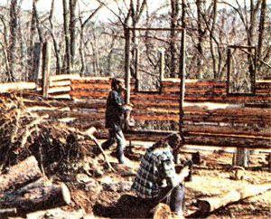

MOTHER NO. 22 featured, among other things, an article by Lee Winchester titled, "Homesteading Capital is Where You Find It". Jan and Jim Hilberer, however with practically no money at all had already successfully left the Big City behind them long before they read Lee's thoughts! Here's a report Jim sent us in March of 1974.
I would like to point out that homesteading can be done with little money, lots of hard work, and much pleasure. My wife, Jan, and I left Rochester, New York in the spring of 1972 with $250 and our VW. Less than a year later, we were settling into a cabin of our own on 51/2 acres of Virginia land.
We left the city with the idea of locating inexpensive land in West Virginia. After looking that state over and shelling out a sizable portion of our small bankroll on VW repairs, though, we gravitated to the northern border of Virginia where jobs were more plentiful. Our plans at that time were to camp out for the summer, work, and save every penny we could toward our homestead. We weren't exactly sure right then that we'd be able to make the idea work the way we wanted because, although I've camped since I was a child, Jan had never-until then-camped out in her life.
We pulled into an attractive little campground with a brand-new 9 X 9 tent, a Coleman stove, some lanterns, and $70.00 left in our pockets. We liked what we saw. The grounds had a 15-acre lake, showers, toilets, washer, and dryer . . . not a bad home for the summer. So we chatted with the owners and they agreed to let us stay for the whole season for the lump sum of $100 . . . half down and the other half due the following month.
That left us with only $20.00 to live on, so we immediately set up camp and went looking for work. I took a job that paid $100 a week-not much, but a good start-that same day and Jan, a teacher, found employment as an art instructor shortly afterwards.
I chopped all our firewood that summer with an axe and Jan and I kept our campsite clean and neat. This industry and our ambition soon impressed other campers who used our grounds every weekend and we became friends with some of these "regulars". Before long some of them were even offering me good jobs back in the towns they'd come from . . . but I turned them down because of the distance I would have had to travel each day.
By the end of the summer we had come to know the owners of the little park in which we'd spent the season so well that we ended up buying our homestead from them. It's five and a half acres overlooking the Shenandoah River in the Blue Ridge Mountains. We paid $350 down and the owners financed the balance at $65.00 a month.
The deal on our land was closed in October . . . too late for us to put up a house for the winter. So Jan and I found a 11 0-acre farm we could rent for $60.00 a month. Heat wasn't included at that price, but the old farmhouse kitchen that we'd be using was equipped with a beautiful wood-burning stove. We bought an additional wood-burning heater of our own, moved in, and stayed snug and warm all winter.
Our comfort, however, only whetted our appetite even more for a home of our own. But how would we get it? We had nowhere near enough money to buy a house.
"Maybe we could build a home," we thought. "Maybe we could build a log cabin." So, even though we'd had no previous building experience, we read two books on log cabin construction and went to work.
As soon as the building site was marked off, we paid a 'dozer operator $20.00 to push off the few trees that stood where we wanted our new house to be. As we watched those trees fall, one of our new neighbors came over to get acquainted.
"Whatcha gonna build?" he asked during the course of our conversation.
"Log cabin," we answered.
"Well, I declare," he said. "I just cleared two acres of straight pines and put me in a pasture. Now I sure got no use for those trees. Mebbe you have."
We were happy to accept that offer and, the next day, our new friend started dragging logs to our homestead with his tractor. The generous gift inspired us to go right out and buy a chain saw so we could begin cutting the rough timber into the lengths we needed for the walls of our house. We also picked up three drawknives for 50c apiece at an auction . . . and, for the next three months, Jan and I spent every weekend cutting off branches and peeling logs out on our property.
About the first of March Terry Atwater, a friend from New York, came down to visit . . . and was so impressed at our progress that he decided to stay and help us erect our cabin, One month later-on April 1-we moved into the 14 X 24 dwelling. And by May 21, our garden was in the ground . . . which resulted in plenty of fresh vegetables for the summer and a surplus that we canned for winter use.
Although we still have no electricity (we heat with wood and light our home with kerosene), we have had running water piped in to the cabin. Our monthly bills, then, are $65.00 for a land payment and $4.00 for water.
The total cost of that first cabin-including chain saw-was $700. We built the structure in just seven months' time and paid cash for everything we bought as we went along. And now, with the money we've saved during the past year, we're starting on our new 24 X 32 log cabin!
|
 |
|
|